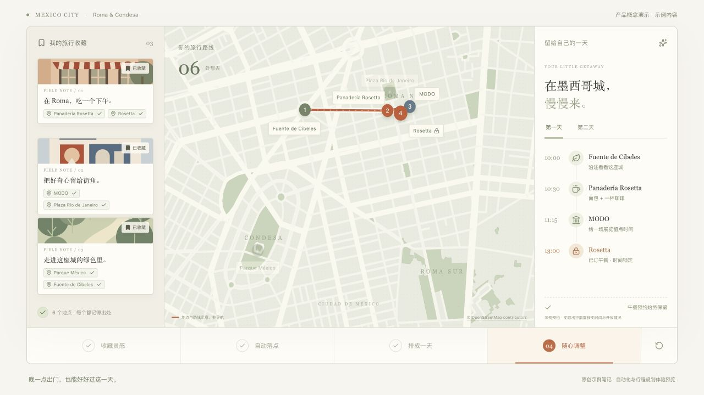

Saving a place is only the beginning.收藏之后，还有一份重复劳动。
Before a trip, my saves already say a lot: a café I want to try, an exhibition I want to see, a street I want to wander. Yet planning means reopening posts, distinguishing a bakery from a restaurant with the same name, checking addresses, and rebuilding the list on a map. A later start can mean another round of rearranging.旅行前，我已经用收藏表达过很多次偏好：这家店想去、这个展想看、这条街想走。但真正出发时，仍要重新翻笔记、分清面包店和同名餐厅、查地址，再把地点一个个放进地图。调整出门时间，还得把安排从头看一遍。
I want to preserve the person’s choices and automate the repetitive preparation. The starting point is what someone has already saved. The product should remember why a place matters and turn that intent into something useful.我想保留人的选择，把重复准备交给产品。起点是用户已经收藏的内容；产品要记得“为什么想去”，也要帮这些地方找到可以实际使用的位置。
Automation should be visible in the result.自动化的价值，应该在结果里看见。
Less copying少搬运一次
Bring places and recommendations out of posts, with a path back to the source.图文中的地点和推荐一起整理，来源仍能找回。
Fewer repeated checks少重复判断
Keep branches distinct, reuse confirmed results, and leave ambiguous choices to the person.区分具体分店，复用已确认结果；有歧义时留给人决定。
Less replanning少推倒重来
Let a later start or a shorter walk reshape the day while preserving fixed bookings. This is the next product direction.未来让晚出门、少走路等偏好带动行程调整，保留固定预约。
The value needs to show up as fewer repeated searches, fewer wrong branches, and results people can understand and change. Time saved has not yet been measured with independent users; that is part of the next validation.是否有价值，要看用户能否少做重复搜索、少遇到错误分店，并在需要时理解和修改结果。当前还没有独立用户的节时测量，因此我把这些作为接下来的验证目标。
The choices that shaped the product.几个决定，塑造了现在的产品。
Start with existing intent从已收藏的兴趣出发
More recommendations are easy to add. Making existing saves useful is closer to this problem. Keep the source, the recommendation, and the identity of the place together.推荐更多地方很容易，帮助用户用好已有收藏更贴近这次问题。来源、图文里的推荐和地点身份都要留下。
Deliver into a familiar map first先把结果交付到熟悉的地图
I narrowed the early flow to connecting accounts, organizing places, and reviewing exceptions, with results in the user’s own Google Maps. The separate demo now explores what an itinerary could add, before committing to its full scope.早期把主流程收缩到连接账号、整理地点与必要核对，结果进入自己的 Google Maps。现在用独立演示探索地图之后的行程价值，先看用户是否需要，再决定做多深。
Make uncertainty manageable把不确定性留在可处理的位置
A shared name does not mean the same branch, and a click does not prove delivery. Uncertain places wait for review; saves are checked; interrupted work is reconciled before continuing.同名不等于同一家店，点击保存也不等于已经交付。依据不足的地点暂存；保存结果需要回看确认；中断后先查清现状，再决定下一步。
What works today?现在做到哪了？
Real places have completed the loop真实地点已经走过完整链路
Controlled real cases have completed extraction, place verification, saving to Google Maps, and read-back checks. Deduplication and recovery mechanisms are implemented. Some steps still involved human or assistant intervention; unattended batch delivery is not yet established.在受控真实案例中，已跑通图文识别、地点核验、保存到 Google Maps 和保存后回读，也有去重与中断恢复机制。开发过程中仍有人工或助手介入，尚未验收整批无人值守。
The intended journey is visible收藏、地图、行程已经可以连起来看
The public demo turns saves into pins and a day plan, then adjusts it for a later start or less walking. Preset examples make the product direction tangible; this is not a general route optimizer.公开站点可以体验收藏逐个落点、排成一天、晚出门或少走路时调整安排。它使用预设示例状态，帮助验证产品表达；还不是通用的路线优化器。
Make it reliable beyond the developer离开开发者，也能可靠工作
Persistent sessions, recovery from failures, delivery while the user’s computer is off, and independent onboarding by a second user still need validation. These determine whether a successful run becomes an everyday product.持续登录、异常恢复、电脑关机后的云端交付，以及第二位用户能否独立上手，仍需验证。这些会决定自动化能否从一次跑通变成日常可用。
What comes next, and why?下一步，按用户价值推进。
First, dependable delivery先让地图交付稳定
Validate continued operation, session-expiry prompts, and recovery so delivered places are verifiable and exceptions are understandable.验证持续运行、失效提醒与恢复，做到收藏结果能被确认，异常也有清楚的去处。
Then, independent use再让新用户独立跑通
Let a small group build their first map from their own travel saves. Observe where they get stuck, how much review they need, and whether the result helps them travel.邀请小范围用户用自己的旅行收藏完成第一张地图，观察他们在哪里卡住、核对了多少次，以及结果是否真能用于出行。
Then, a plan that can adapt最后把行程接上来
Use that feedback to define itinerary scope, then connect real distance, timing, and booking constraints. A changed preference should produce a day the traveler can still understand.根据反馈决定每日安排与路线调整的范围，再接入真实距离、时间和预约约束。目标是改一个偏好，能看懂整天怎样随之变化。
My role in the project.我在这个项目里做什么。
I define the user problem, choose the scope, bring real travel scenarios and acceptance feedback, and work with AI on implementation and testing. The central product work is making automation accountable: when the system should continue, when a person should decide, and what counts as a completed result.我负责定义用户问题、选择产品范围、提供真实旅行场景与验收反馈，并与 AI 协作实现和测试。最重要的工作，是把“自动化”变成可以判断的交付：哪里让系统继续，哪里需要人，什么结果才值得说已经完成。